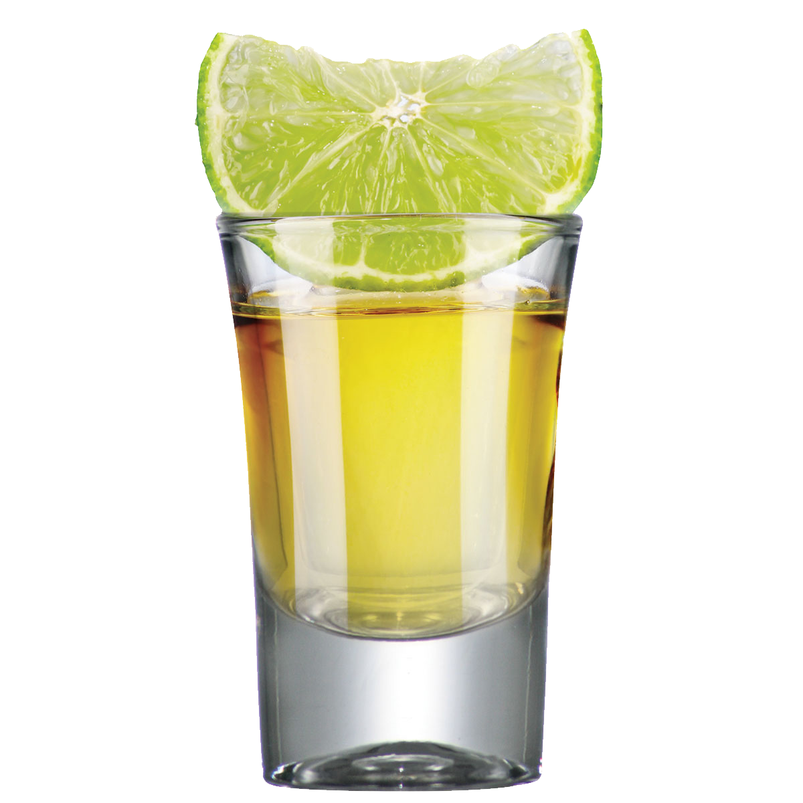

Final Project ThinkSpace
This will be organized such that my most recent thoughts are on top.
Bill of Materials
Tentative:
Timeline
Project Plan
Revision
Talking with Ibrahim about my project gave me a new direction for my project.
Proposal
I collect shotglasses.

Over the course of my life, I have collected about 80 shotglasses!
They come from places I've traveled
and snapshot great times with great people.
But my 80-some shotglasses are getting more and more unwieldy to transport and display.
For my final project, I'd like to build a structure that can:
- Display My Shotglasses AND/OR
- Help Transport My Shotglasses
Ideal Features
- Scalability/Modular Design: Ideally, my design would be composed of many modules which I could combine and rearrange in order to scale up or down how many shotglasses I wanted to display or transport, or simply to modify for aesthetics or different environments.
- Protective: This structure should make it easy to move my shotglasses between home and campus, as well as protect shotglasses on display.
- Separation: Most shotglasses are made of glass or similarly fragile materials. It is best, then, for each shotglass to be displayed and/or transported separately, which likely means creating many "compartments."
- Flexibility/Adjustability for Shotglass Sizing: While most shotglasses are the same size, I have many many irregular shotglass shapes and sizes. Ideally my structure would allow for many different kinds of shotglasses. That means the structure I make must be very adjustable either post-creation -- I can adjust a compartment to be taller or shorter, say -- or pre-creation -- use template designs that are easy to customize for each of my shotglasses.
- Indexing + Automation: As a stretch goal, and to incorporate microcontroller programming and add a lil something special to my project, I would love to be able to use a screen to select a specific shotglass to either highlight or physically bring to the front. This would involve accurate indexing and labeling of my shotglasses, as well as connection of the Arduino or ESP32 to lights/motors.
- Dust-Proof: A covered structure would help keep shotglasses dust-free.
- Easy Access: Since I'd like to use my shotglasses from time to time and add new ones, I want a structure that makes it easy to reach each of my shotglasses.
What Already Exists
Since the overarching goal is to display/transport my shotglasses,
I have a lot of flexibility in terms of building a structure to
accomplish that goal.
Let's begin by looking at what kinds of shotglass displays and storage options are already out there!

This 24 shot glass display case is available from Displays2Go for $115.
This seems:
- expensive: $115 to hold less than a third of my shotglass collection is certainly not worth it.
- difficult to transport: The display itself is large enough that it seems harvard to transport and not protective for transporting shotglasses.
- not easy access: Since shotglasses are placed in the middle of the shelves, they're hard to reach.

This shelf can hold 30, available on Etsy for $155+.
This shelf is pretty simple, but lights up!
Possible Structures and Approaches
- Revolving Cake-style Tiers: Create several circle layers that revolve, and can bring one shotglass on any layer to the front.
- Lit: Illuminate either all layers, and/or specific layers, and/or specific shotglasses.
- Latched, Clamping, Protective Spheres: Cast-mold or 3D print spheres that are netted/materialed with some give such that help protect whatever's inside. Half-and half spheres that swivel and can latch closed. Include adjustable clamps This is my favorite approach, but it seems really difficult to scale up to 80+ shotglasses.